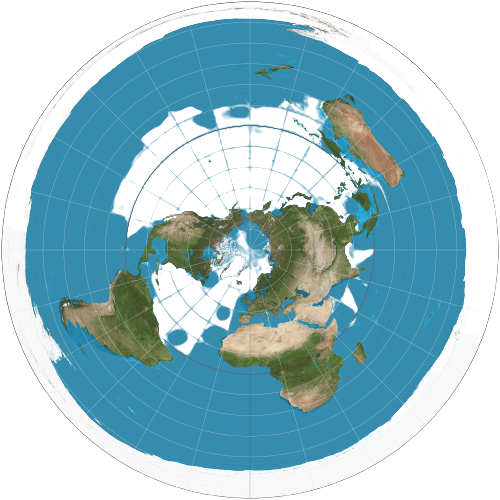

Representantes do grupo:
- Bruno
- Andrew
- Thiago
- Maurício
- Paulo
- Nicholas
- Pedro Ricarte
O que vamos ver neste trabalho?
Vamos estudar sobre as projeções cartográficas, porém, com um foco a mais na projeção azimutal ou plana.
O que são projeções
cartográficas
Projeções cartográficas são representações da superfície esférica da Terra em um plano, possibilitando a construção de um mapa.
Observações sobre projeções
As projeções têm diversas formas de deformações para facilitar a visualização de cada detalhe desejado.
Modelos de projeções
azimutais
O mapa numa projeção azimutal é construído sobre um plano tangente a um ponto qualquer da esfera terrestre. Este ponto ocupa sempre o centro do mapa.
É usada, em geral, para representar as regiões polares e suas proximidades e para localizar um país na posição central, tornando possível o cálculo de sua distância em relação a qualquer ponto da superfície terrestre.
As Projeções azimutais são as mais usadas geopoliticamente, pois podem realçar o “status” de um país em relação aos demais da Terra. E também a projeção azimutal representa o símbolo da ONU. Como você pode observar abaixo:
Johann Heinrich
Lambert
A projeção azimutal de Lambert é uma forma de mapear uma esfera para um disco. Ela representa a área de forma precisa em todas as regiões da esfera, mas não ângulos. Recebe o nome do matemático Johann Heinrich Lambert que a propôs em 1772.
Algumas
perguntas
Quais os tipos de projeções?
Projeção Plana/Azimutal, Projeção Cônica e Projeção Cilíndrica
Quem criou o primeiro tipo de projeção?
Gerhard Mercator
Em que ano surgiu a primeira projeção?
1895
Quais são os criadores criadores das principais projeções cartográficas?
Gerhard Mercator (Projeção Cilíndrica)
Johann Heinrich Lambert (Projeção Azimutal/Plana)
Johann Heinrich Lambert (Projeção Cônica)
Observação: Lambert criou a projeção cônica, porém, a projeção ficou desconhecida. Assim, sendo continuada individualmente por Harding, Herschell e Boole no século XIX